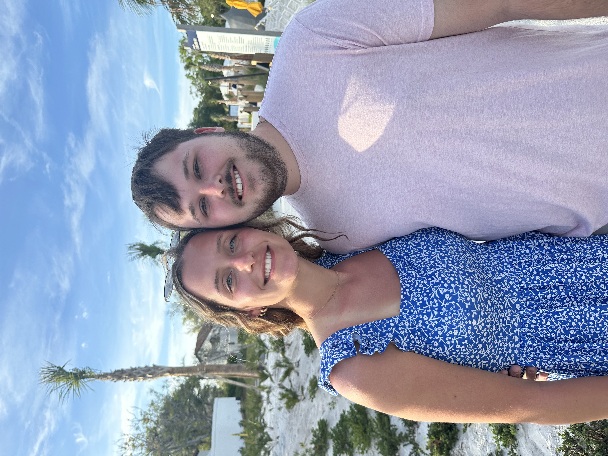

About Me
My name is Ben Onderick and i am senior at the University of Iowa majoring in Business Analytics and Information Systems. I am from Dubuque Iowa, Dubuque is the city on the Mississippi river right on the border of Iowa, Illinois and Wisconsin. I am 21 years old and 3 other siblings. I have a twin sister, Natalie, who also goes to the University of Iowa and studies engineering. I have a brother named Luke, who is 19 and also goes to the University and studies finance. I also have a younger sister named Chloe who is a freshman in highschool.
I have worked several different jobs while in highschool and also throughout college. My first job that i had when i was a sophomore in highschool was being a dietary aid at a nursing home. In this job i served meals and cleaned dishes for the nursing home residents. I worked there for about a year. My second job was working at Hy-Vee as a produce clerk. In this job i worked in the produce department and also helped cashier. I worked there for about a year. After this job, i got a job at a local golf course. Here i worked at a cart cleanaer, pro shop attendent and bartender. I have worked there for 4 years now. During College, i have worked two jobs. I worked at chipotle for about 5 monthes. I have also worked at John Deere for about a year now. At John Deere i work on the cost management team. I create reports, manage data and do some supplier relations things.
During my time at the Univeristy of Iowa, I have been able to work on several different projects all varying in skills to differentiate my skillset. In database management, I was able to use SQL to create a web application displaying NFL teams success in the last 30 years. In data wrangling, i used a similar dataset to create a report determining which NFL team was the most successful in the last decade based on statistics and playoff appearences. In information visualization, I was able to create a dashboard, with a bunch of graphs of different NFl teams statistics, and be able to forecast potential statistics for the next season. Finally, in data mining, i worked with a team to create a forecasting model based on MLB pitchers statistics. Out model was able to give a prediction if a certain pitcher would win the Cy Young award, based on prior statistics and trends. Each of these projects were focused on a different coding language or program.
